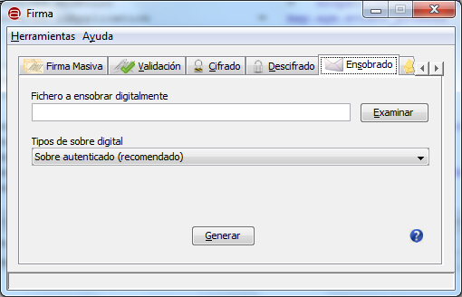
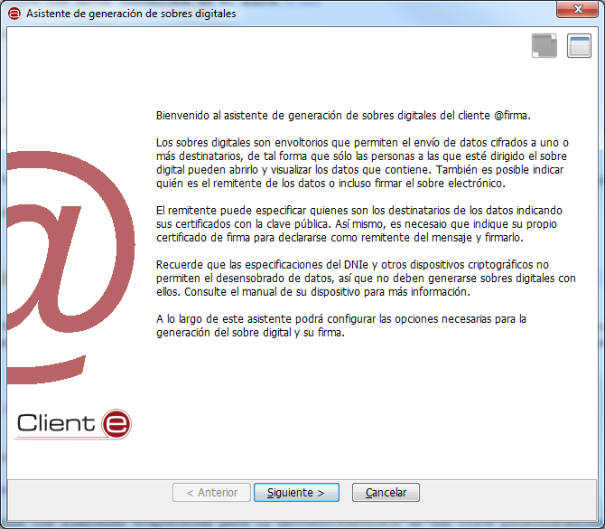
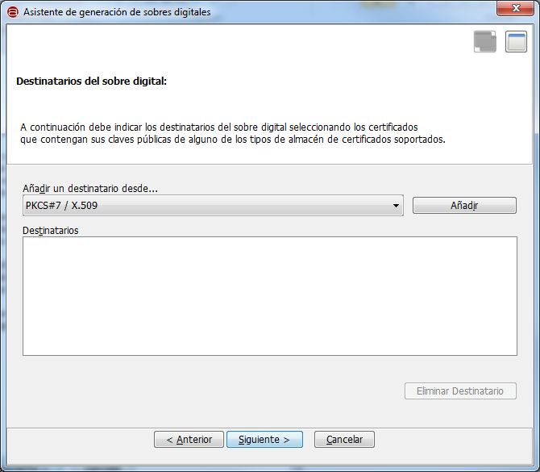
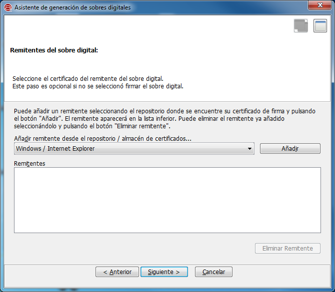

Desde la opción de "Ensobrado" es posible generar sobres digitales para la transferencia de datos segura con
otras personas.
Esta opción sólo está disponible en el modo de vista avanzada.
IMPORTANTE: El DNIe y otros dispositivos externos tienen bloqueado el proceso de desenvoltura de sobres, así que
nunca deben utilizarse para generar sobre digitales.

Las opciones de configuración disponibles son:
- Fichero a ensobrar digitalmente:
- Permite seleccionar el documento que deseamos introducir en el sobre digital. Es posible pulsar el botón "Examinar"
para buscar un fichero en disco o escribir directamente su ruta en la caja de texto asociada.
- Tecla de acceso rápido: o
- Tecla de acceso rápido al botón Examinar: e
- Tipos de sobre digital:
- Indica el tipo de sobre electrónico que debe generarse. Los tipos soportados son:
- Sobre autenticado: Este es el tipo por defecto y el sobre más seguro. Cifra los datos contenidos en el sobre y agrega
un código de autenticación para detectar modificación en el sobre.
- Sobre firmado: Cifra los datos contenidos en el sobre y posteriormente lo firma.
- Sobre simple: Cifra los datos contenidos en el sobre.
- Tecla de acceso rápido: t
Al pulsar el icono de ayuda se muestra la ventana de ayuda para el menú "Ensobrado".
- Tecla de acceso rápido para el botón de Ayuda: h
Al pulsar el botón "Generar" se inicializará el asistente para la generación de sobres electrónicos.
- Tecla de acceso rápido para el botón "Generar":

Al pulsar el botón "Siguiente >" pasaremos al primer paso para la generación del sobre electrónico: la selección
del los destinatarios del sobre. Desde esta pantalla podrán indicarse los distintos destinatarios del sobre por medio de
sus certificados.

Las opciones de configuración disponibles en esta pantalla son:
- Añadir un destinatario desde.
- Este listado contiene los almacenes disponibles para la extracción de una clave pública para el envío de datos.
Es de suponer que no disponemos de los certificados con la clave pública de los destinatarios en nuestro almacén personal,
así que sólo están disponibles los almacenes en fichero y la libreta de direcciones. Los almacenes concretos disponibles son:
- PKCS#7 / X.509: Certificado en fichero (.cer) con clave pública.
- PKCS#12 / PFX: Certificado en almacén en fichero (.p12, .pfx).
- Windows / Internet Explorer (otras personas / libreta de direcciones): Almacén de Windows con las claves públicas de
otras personas.
- Tecla de acceso rápido: d
- Añadir.
- Abre un diálogo para la selección de un certificado del almacén seleccionado. Si el almacén está protegido con contraseña será
necesario introducirla. Al seleccionar un certificado, este se agrega al listado de destinatarios.
- Tecla de acceso rápido: r
- Destinatarios.
- Muestra la lista de destinatarios. Permite seleccionar elementos para ser eliminados.
- Tecla de acceso rápido: t
- Eliminar destinatario.
- Permite eliminar el destinatario seleccionado de la lista de destinatarios.
- Tecla de acceso rápido: e
Es obligatorio seleccionar al menos un destinatario para el sobre digital. Al pulsar el botón "Siguiente >" nos aparecerá la ventana
para la selección del remitente del sobre. En esta pantalla podemos seleccionar nuestro certificado para identificarnos como remitente
del sobre. Este paso es opcional en la generación de Sobres Simples y obligatorio en los Sobres Firmados o Autenticados.
En este paso, sí es posible utilizar el DNIe.

Las opciones disponibles en esta pantalla son:
- Añadir remitente desde el repositorio / almacén de certificados.
- Este listado contiene los posibles almacenes que pueden contener el certificado del quien genera el sobre digital. Los
almacenes concretos disponibles son:
- Windows / Internet Explorer: Para tomar el certificado del almacén de Windows o un dispositivo externo (por ejemplo,
el DNIe) instalado en el sistema.
- PKCS#12 / PFX: Para tomar el certificado de un almacén en disco en formato P12 o PFX.
- PKCS#7 / X.509: Para tomar el certificado de un almacén en disco en formato P12 o X.509.
- Tecla de acceso rápido: d
- Añadir
- Abre un diálogo para la selección de un certificado del almacén seleccionado. Si el almacén está protegido con contraseña
será necesario introducirla. Al seleccionar un certificado, este se agrega como el nuevo remitente del sobre. Actualmente la Interfaz
de Escritorio del Cliente @firma sólo soporta la configuración de un remitente para el sobre electrónico.
- Tecla de acceso rápido: r
- Remitente
- Muestra la lista de remitentes. Permite seleccionar elementos para ser eliminados.
- Tecla de acceso rápido: t
- Eliminar remitente
- Permite eliminar el remitente seleccionado de la lista de remitentes.
- Tecla de acceso rápido: e
Al pulsar el botón "Siguiente >" se lleva a cabo el proceso de generación del sobre electrónico. Si ocurriese un error durante
el proceso, se mostrará el mensaje correspondiente, y si finaliza el proceso correctamente se nos mostrará un diálogo para almacenar
el sobre electrónico generado.
Teclas de acceso rápido para los botones:
- Maximizar ventana: m
- Anterior: a
- Siguiente: s
- Cancelar: c
- Finalizar: f